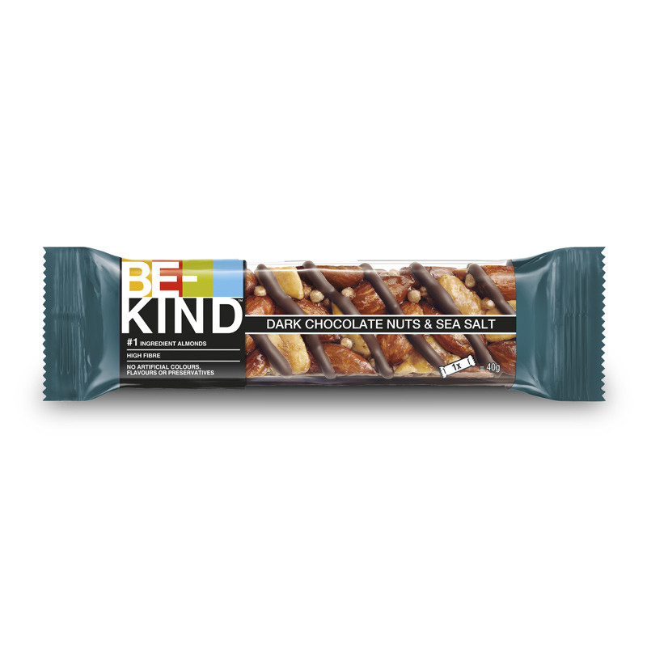

Dark Chocolate Nuts & Sea Salt Bars

Description
The combination of chocolate, and sea salt found in KIND's Dark Chocolate Nuts & Sea Salt bars is both simple and rewarding. Here's a homemade version that captures the essence of this popular snack.
Ingredients
- 1½ cups (about 200g) mixed nuts (such as almonds, peanuts, and cashews), roughly chopped
- 1 cup (100g) rolled oats
- ¼ cup (60ml) honey
- ¼ cup (60ml) maple syrup
- 2 tablespoons (30g) unsalted butter or coconut oil, melted
- ½ teaspoon vanilla extract
- ¼ teaspoon sea salt, plus extra for sprinkling
- ½ cup (90g) dark chocolate chips or chunks
Instructions
- Prepare the Pan: Line an 8x8-inch (20x20 cm) baking dish with parchment paper, leaving some overhang for easy removal.
- Combine Dry Ingredients: In a large mixing bowl, combine the chopped nuts and rolled oats.
- Mix Wet Ingredients: In a small saucepan over low heat, combine the honey, maple syrup, and melted butter or coconut oil. Stir until the mixture is smooth and just warmed through. Remove from heat and stir in the vanilla extract and ¼ teaspoon of sea salt.
- Combine Mixtures: Pour the wet mixture over the dry ingredients. Stir until all the nuts and oats are thoroughly coated.
- Press into Pan: Transfer the mixture into the prepared baking dish. Using a spatula or the back of a spoon, press it down firmly to create an even layer.
- Bake: Place the pan in a preheated oven at 325°F (160°C) and bake for 15–20 minutes, or until the edges are golden brown.
- Add Chocolate: Remove the pan from the oven and immediately sprinkle the dark chocolate chips over the top. Let them sit for a few minutes to melt, then use a spatula to spread the melted chocolate evenly over the surface.
- Sprinkle Sea Salt: While the chocolate is still warm, sprinkle a pinch of sea salt over the top for that signature sweet and salty flavor.
- Cool and Set: Allow the bars to cool at room temperature, then transfer to the refrigerator for about 1 hour to set the chocolate.
- Slice and Serve: Once set, use the parchment overhang to lift the bars out of the pan. Place on a cutting board and slice into desired portions.
These homemade bars offer a satisfying crunch from the nuts and oats, a rich layer of dark chocolate, and a hint of sea salt to balance the sweetness. They make for a perfect snack or energy boost throughout the day.